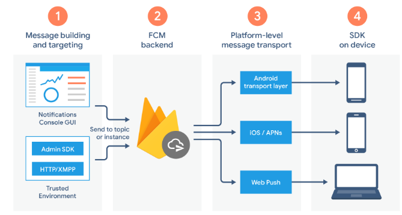
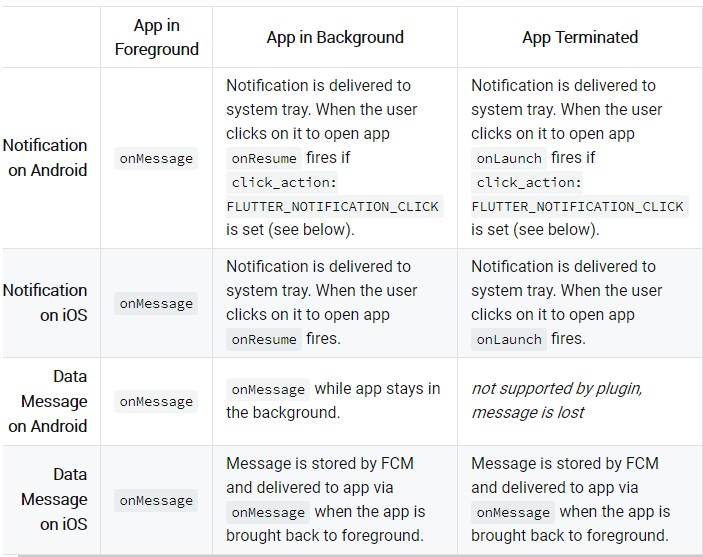
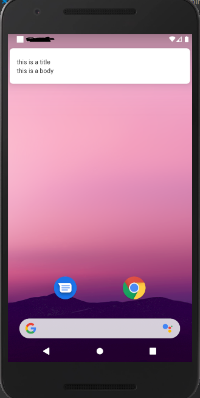
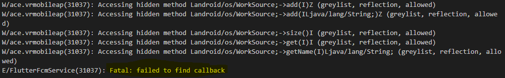
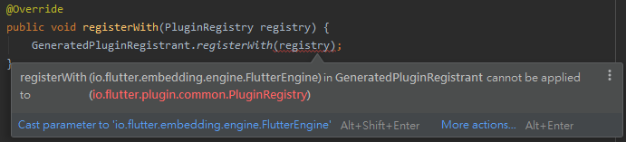
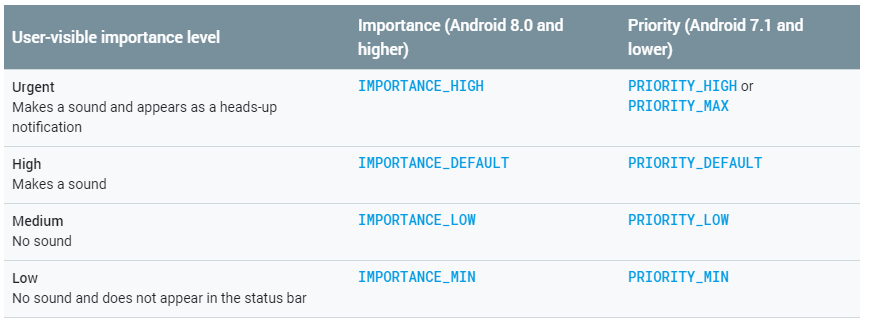
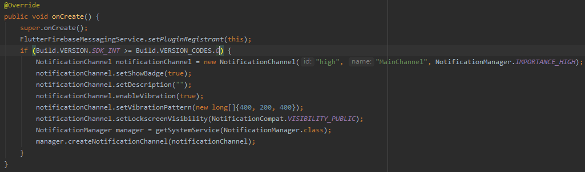

Firebase Cloud Messaging - Android
前言
最近 Flutter 的專案上剛好需要導入 Firebase 的 Cloud Messaging 功能， 也紀錄一下實作的步驟以及遇到問題。
Firebase Cloud Messaging
Firebase Cloud Messaging(FCM), 是
Firebase 提供的服務之一，
讓使用者進行訊息(message)發送與接收。主要負責:
- 傳送推播(
Notification)與資料(data)訊息 - 提供三種發送方式
- 單一裝置(
Single) - 群組發送(
Groups) - 訂閱群發送(
Subscribed)
- 單一裝置(
- 從客戶端(
Client)發送訊息(雙向)
其基礎結構為

Message Type
FCM 目前提供兩種訊息的傳輸模式Notification及Data。Notification是 SDK 在處理的，
而Data是 Client 處理。簡單說，在接收到Notification時，SDK 會將收到的訊息顯示在
手機上的訊息列並根據
Notification Channel ID
決定是否顯示訊息提示窗，而Data可以讓 Client 經過處理後再決定是否要顯示或是執行其他的功能。
就我看來這兩者基本上的差別就是Notification預設有訊息提示窗而Data沒有。
FCM Notification Composer 沒有提供傳送Data的方法，需要使用 Call API 的方式。
主要的步驟只有兩個 - Firebase 的基本設定及 安裝官方提供的 flutter 的 cloud messaging 函式庫 - firebase_messaging
基本設定的部份，官方文件已經詳解了，在此就不加以說明了。
設定 Flutter FCM Library - firebase_messaging
flutter pub 上的文件也已經詳解如何整合至 Android 或 iOS 了，基本上照做都能順利整合。
需要注意的是，如果希望 Client 在點擊訊息時能觸發onResume、oLaunch的 Handler ，
就必需在android/app/src/main/AndroidManifest.xml裡加上 filter
<intent-filter>
<action android:name="FLUTTER_NOTIFICATION_CLICK" />
<category android:name="android.intent.category.DEFAULT" />
</intent-filter>
先來看一下各個 Handler 在Notification及Data 的 Spec

讓我使用
Postman 來測試Notification與Data這兩種傳送方式。
打的 Payload 如下
Notification:
{
"notification": {
"body": "this is a body",
"title": "this is a title"
},
"priority": "high",
"data": {
"click_action": "FLUTTER_NOTIFICATION_CLICK",
"id": "high",
"status": "done"
},
"to": "YOUR CLIENT TOKEN"
}
Data:
{
"priority": "high",
"data": {
"click_action": "FLUTTER_NOTIFICATION_CLICK",
"id": "high",
"status": "done"
},
"to": "YOUR CLIENT TOKEN"
}
讓我們觀察 Foreground, Background 及 Terminated 的行為吧
-
Foreground:
-
Notification
觸發的 Handler - onMessage
I/flutter (28543): on Message: {notification: {title: this is a title, body: this is a body}, data: {status: done, id: high, click_action: FLUTTER_NOTIFICATION_CLICK}} -
Data
觸發的 Handler - onMessage
I/flutter (28543): on Message: {notification: {title: null, body: null}, data: {status: done, id: high, click_action: FLUTTER_NOTIFICATION_CLICK}}與文件的描述相符。
-
-
Background:
-
Notification
出現訊息提示窗

在點擊後回復 APP 至前景並觸發 Handler - onResume
I/flutter (28543): on Resume: {notification: {}, data: {collapse_key: "秘密", google.original_priority: high, google.sent_time: 1586406396631, google.delivered_priority: high, google.ttl: 2419200, from: 217808926832, id: high, click_action: FLUTTER_NOTIFICATION_CLICK, google.message_id: 0:1586406396651621%4e2e62744e2e6274, status: done}} -
Data
結果，發生錯誤了!!!找不到相對應的 Callback function

但在參考 pub 文件 並實作
onBackgroundMessage這個 Handler 後就可以接到資料I/flutter (31277): on Background data: {status: done, id: high, click_action: FLUTTER_NOTIFICATION_CLICK}
Data的反應跟文件上有落差…，文件上表示應該觸發onMessage。 -
-
Terminated:
因為 Terminated 的狀態會看不到 Debug 的訊息，所以我用 Toast Message 來觀察行為，
Data的部份文件已經表明會遺失，Notification試了之後也發現會出現提示窗， 但自帶的 Data 也是遺失。
Troubleshooting
Error - “PluginRegistry cannot be converted to FlutterEngine”
在實作onBackgroundMessage的時候，Application.java如果是參考 pub 裡的實作會發生錯誤

， 參考 這篇後，實作新的 Class 並取代舊的即可解決接收的到訊息但無法顯示彈跳視窗
這問題在下列兩種使用方式都有出現
- 從 Firebase Cloud Message 的 Composer
- 利用 Call API 的方式觸發(如: cURL, postman…)
發生原因主要是因為沒有設定 Default Channel ID，其定義如下

解法:
-
在
AndroidManifest.xml加入下面的 meta<meta-data android:name="com.google.firebase.messaging.default_notification_channel_id" android:value="high" />***測試後發現，如果希望在 Call API 的方式下能正常顯示提示窗，這個 meta 必需存在*** -
在
Application.java裡面實作Notification Channel
結論
FCM 提供了我目前所有的需求了，重點是它每個月的免費額度也高，除非客戶量很驚人， 否則幾乎用不完，即使用完了也不用擔心，因為，我相信這代表你的業務也已經成長到可以負擔這此費用的層級了。